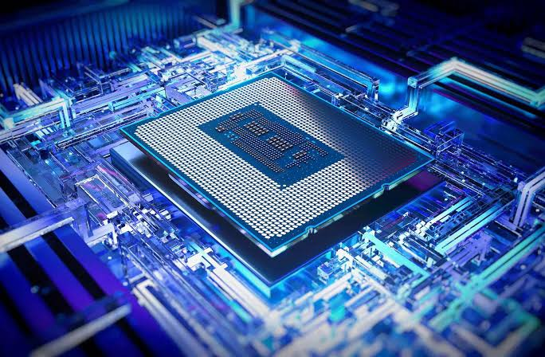
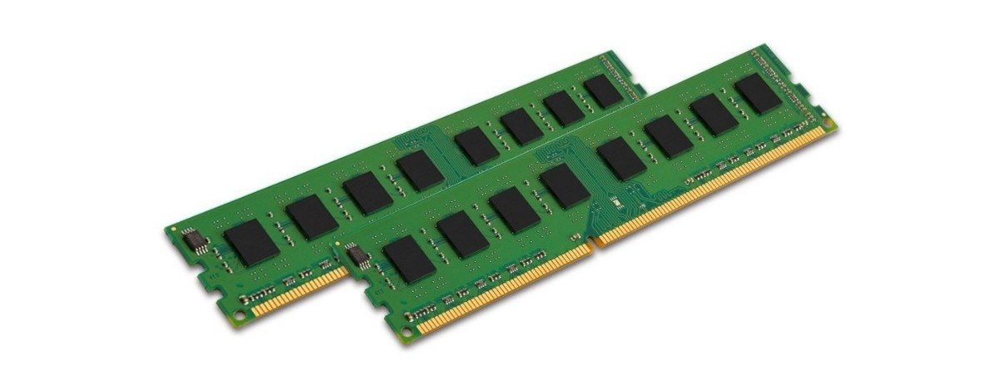

Ingeniería Informática y Computadoras
Integración de Hardware Profesional
Las computadoras requieren componentes físicos estructurados y sincronizados eléctricamente para poder ejecutar las instrucciones del código de manera eficiente. En el ámbito de la ingeniería informática, la relación entre el diseño de software algorítmico y las capacidades físicas de las máquinas es fundamental para optimizar los tiempos de procesamiento en los sistemas empresariales modernos.
Toda línea de código escrita en lenguajes de alto nivel debe ser traducida a instrucciones binarias que los circuitos electrónicos del computador puedan interpretar. Una correcta distribución del hardware evita los cuellos de botella en la transferencia de datos y permite un rendimiento fluido de las aplicaciones críticas dentro del entorno corporativo.

Para profundizar en los pilares del hardware informático, analizamos la estructura técnica de los dos componentes principales que hacen posible la computación:
- El Procesador (CPU)
- La unidad central de procesamiento actúa como el cerebro de la computadora, encargada de realizar el ciclo de búsqueda, decodificación y ejecución secuencial de las instrucciones de los programas. Su rendimiento se determina por la velocidad de reloj y la eficiencia de sus núcleos para procesar operaciones aritméticas y lógicas complejas de manera simultánea.
- Memoria Interna (RAM)
- Espacio de almacenamiento volátil, temporal y de alta velocidad que interactúa directamente con el procesador. Su función principal es almacenar las instrucciones de los programas y los conjuntos de datos mientras las aplicaciones se ejecutan activamente en el sistema, permitiendo que la CPU acceda a la información de manera inmediata sin retrasos físicos de lectura.
